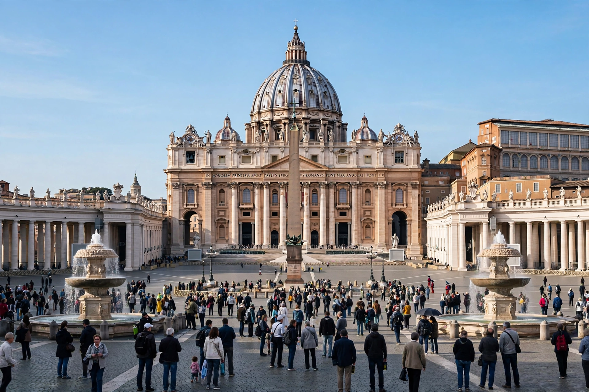

From Wikipedia, the free encyclopedia
| Catholic Church | |
|---|---|
| Denomination | Christianity (Latin Church and 23 Eastern Catholic Churches) |
| Head | The Pope (Bishop of Rome) |
| Headquarters | Vatican City |
| Membership | approx. 1.4 billion baptised members |
| Founded | 1st century, Judea |

The Catholic Church is the largest Christian church, with approximately 1.4 billion baptised members worldwide, comprising the Latin Church and 23 Eastern Catholic Churches in full communion with the Pope, the Bishop of Rome, whom Catholics regard as the successor of Saint Peter. Headquartered in Vatican City, it is among the world's oldest continuously operating institutions and played a central role in the history of Western civilisation.
Catholic doctrine, set out in the Catechism of the Catholic Church (1992), holds that the Church was founded by Jesus Christ, who appointed Peter as its head. It teaches seven sacraments — Baptism, Confirmation, Eucharist, Penance, Anointing of the Sick, Holy Orders and Matrimony — and that salvation involves both faith and works, mediated by grace. Scripture and Sacred Tradition together transmit revelation, interpreted by the Magisterium. Devotion to Mary, the mother of Jesus, and to the saints, and doctrines such as purgatory and the real presence of Christ in the Eucharist (transubstantiation), distinguish Catholic practice. Its moral teaching addresses the sanctity of life, social justice and the common good, and its religious orders have been central to education, healthcare and scholarship.
The Church understands itself as continuous with the apostolic community of the 1st century. It became the state church of the Roman Empire in the 4th century; the East–West Schism of 1054 divided it from the Eastern Orthodox Church, and the 16th-century Protestant Reformation — answered by the Catholic Counter-Reformation and the Council of Trent — divided Western Christianity. The Second Vatican Council (1962–65) modernised liturgy and relations with other faiths. In recent decades the Church has confronted clergy sexual-abuse scandals, questions of governance and synodality, and rapid growth in Africa and Asia even as practice declines in much of Europe.
The Church is governed as a hierarchy of pope, cardinals, bishops and priests across more than 3,000 dioceses, alongside religious orders and lay movements. It operates the world's largest non-governmental network of schools and hospitals, and maintains diplomatic relations with most states through the Holy See.